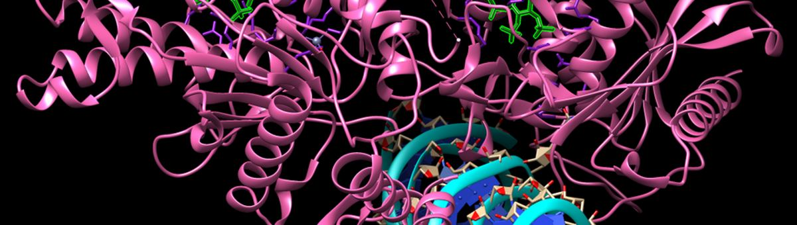

사진: Csully222 · CC BY-SA 4.0EMBL-EBI · Google DeepMind. AlphaFold 가 예측한 단백질 구조 2억 개 이상 (CC BY 4.0). API 로 단백질 하나씩 받을 수 있다 (1주 2차시 실습)
| ① 한 행 | 단백질 하나 |
| ② 입력 X | 아미노산 서열 (글자 20종의 줄) |
| ③ 출력 y | 원자들의 3D 좌표 + 예측 신뢰도 pLDDT |
| ④ 평가지표 | 실험 구조와 겹치는 정도 (GDT, lDDT) |
| ⑤ 기준선 | 이전 대회 (CASP) 최고 방법 |
이 데이터는 하나의 정답 지표보다 분석 · 순위로 쓴다. 노트북의 '다른 문제로 바꿔 보기' 에서 지표를 직접 정해 보세요.
누가, 왜, 어떻게 만든 데이터인지 직접 확인해 보세요.
인턴 · 산학협력 · 프로젝트 주제를 고를 때 참고하세요 (일반적인 예시).